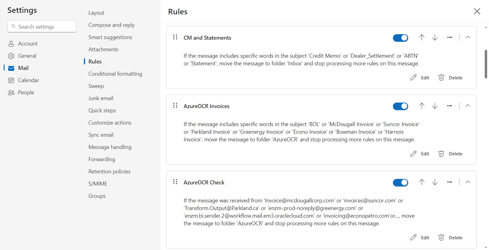
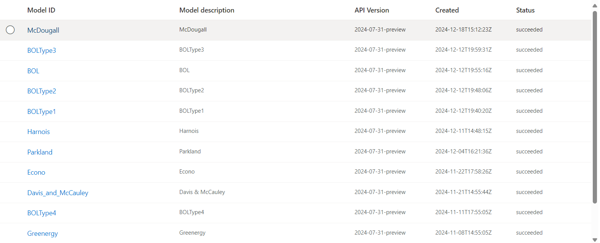

Wesley Renaud wrenaud@uoguelph.ca
AzureOCR is another project that I worked on for the company, Roma. This project goes hand- in-hand with the DTNBOL project. This project monitors an Outlook inbox for Roma which regularly receives invoices and bills of lading. The role of this program is to read the information from these documents and enter into Roma’s NAV server. The program uses a few pieces of software to get the job done. First Outlook inbox rules are used to funnel the invoices and BOLs into a certain folder from which they are processed. Next the C# program iterates over this folder and processes each document by sending it to a model in the Azure Document Intelligence studio, that’s been trained on documents of its type, to read the information that NAV requires that’s on the document (the invoice number, document date, BOL number, etc.).


There are a number of models, one for each of the vendors that the invoices are from, and several more for the different appearances of BOL documents. The C# program determines the document type (invoice and vendor or BOL) by inspecting the email’s sender/subject. Once the document is scanned the necessary values are read and then put into a stored procedure. Working on this project was my first proper exposure to this type of AI document training and with that came new challenges. I needed to learn how to use this type of AI; how many documents I needed to train a model, how different those documents could be, etc. I also had to automate this program like with DTNBOL except this program had to run every one hour, due to the frequency which invoices/BOLs enter the inbox.